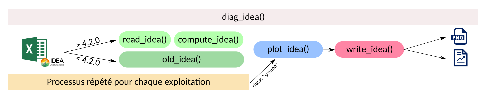

Historique de développement
ideatools_advanced_fr.RmdIntroduction
IDEATools est un package R dédié à la méthode IDEA4, visant à fournir aux utilisateurs des outils pour le traitement, l’automatisation et le reporting de diagnostics IDEA4.
IDEATools 1.0 puis 1.1 ont été développés au cours de l’année 2020 pour répondre à des besoins (urgents) de sorties graphiques pour la méthode IDEA4, notamment en ce qui concerne l’approche par les propriétés. Cette première version du package était donc fonctionnelle mais largement perfectible et n’était pas assez documentée. Dans une optique de recherche reproductible et afin d’être mieux préparé aux adaptations / évolutions de la méthode, IDEATools a subi d’assez lourdes modifications pour aujourd’hui être proposé dans sa version 2.0.
IDEATools 2.0 propose un processus automatisé de diagnostic composé
de différents modules (read_idea(),
compute_idea(), old_idea(),
plot_idea(), write_idea()) tous regroupés dans
une fonction globale, diag_idea(). La présente vignette
présente le fonctionnement général de chacun de ces modules et la
logique générale développée dans IDEATools.
IDEATools 3.0 a apporté une refonte complète du système de production des arbres éclairés et la correction de nombreux bugs.
IDEATools 3.0
La 3e version majeure d’IDEATools n’apporte pas de différence significative sur le processus global de traitement développé pour la version 2, excepté la correction de quelques bugs et la compatibilité avec les dernières versions du calculateur.
Cette version apporte principalement une évolution au niveau du traitement de la production des arbres éclairés. En effet, ces arbres ne sont plus basés sur de la coloration de template “blanc” par des algorithmes de rechercher-remplacer conditionnels, mais sur une syntaxe ggplot s’appuyant sur des tables de références donnant les coordonées de chaque ligne / noeud. Ce changement d’approche permet une meilleure résilience aux changements de noms de noeuds et ouvre même la possibilité d’une traduction automatique des arbres.
La palette de couleurs utilisée a également été revue pour accentuer les contrastes et améliorer la lisibilité pour des utilisateurs avec problèmes de distinction des couleurs :
IDEATools 2.0
Pré-requis
Le package R {IDEATools} nécessite en premier lieu l’installation de R puis de Rstudio.
En attendant son acceptation sur les dépôts officiels du CRAN, IDEATools nécessite l’installation d’un premier package, {remotes}, qui lui permettra d’installer IDEATools depuis un dépôt “non officiel” Github.
install.packages("remotes")
remotes::install_github("davidcarayon/IDEATools")Dépendances R
Le code source d’IDEATools s’appuie sur une liste de 20 packages R (aussi appelées dépendances). Ces packages (ainsi que leurs propres dépendances) sont automatiquement installés en même temps qu’IDEATools :
{tidyr} permet le nettoyage de données
{janitor} permet d’autres nettoyages, notamment les noms de colonne
{dplyr} permet la manipulation des données
{tibble} propose des tableaux de données améliorés
{stringr} permet la manipulation de chaînes de caractères
{glue} permet de combiner des chaînes de caractères et des variables
{magrittr} met à disposition des outils améliorant la lisibilité du code
{jsonlite} permet la manipulation (lecture/écriture) de fichiers json
{readxl} permet la manipulation (lecture/écriture) de fichiers xls ou xlsx
{purrr} permet d’appliquer des fonctions de manière itérative
{ggplot2} permet la production de graphiques
{ggpubr} permet la production de tableaux pouvant être insérés dans des graphiques
{ggrepel} permet notamment l’affichage d’étiquettes avec décalage automatique sur des graphiques
{ggimage} permet d’insérer des images dans des graphiques
{pdftools} permet d’insérer des fichiers pdf dans des graphiques
{cli} permet un affichage console esthétique
{rmarkdown} est un moteur permettant la production de rapports automatiques
{knitr} permet de transformer tableaux et graphiques en éléments pouvant être insérés dans des rapports automatiques
{ggtext} permet la production de cases avec textes pour les arbres éclairés (geom_textbox)
Enfin, 2 packages ne sont pas automatiquement installés (ceci afin de réduire la liste des dépendances) mais restent nécessaires pour la production de certains rapports automatiques :
{officedown} pour les rapports docx
{openxlsx} pour les rapports xlsx
Il suffit de les installer à l’aide de :
install.packages(c("officedown","openxlsx"))Autres dépendances
Pour la production de rapport PDF, une installation de LaTeX est
requise. Si vous n’avez jamais utilisé LaTeX, vous pouvez utiliser la
fonction tinytex::install_tinytex() pour installer une
version minimale de LaTeX vous permettant d’éditer des rapports au
format PDF en utilisant le package IDEATools. Une fois installé, vous
n’avez plus besoin de vous soucier de LaTeX (opération à réaliser
seulement lors de la première utilisation).
read_idea()
Il s’agit de la toute première fonction du processus, permettant d’identifier la validité du fichier d’entrée et d’en extraire métadonnées et items.
read_idea("chemin_calculateur")Après plusieurs itérations du développement de cette fonction, Il
s’avère trop difficile de retrouver les items de manière automatique
pour des versions < 4.2.0. Si la version est trop ancienne,
l’algorithme renverra une erreur et suggèrera une autre fonction,
old_idea, qui récupère directement les indicateurs plutôt
que les items et remplace donc read_idea() +
compute_idea().
La fonction read_idea() n’est développée que pour un
input d’un fichier INDIVIDUEL. Pour du traitement multi-individuel et/ou
de groupe, la fonction globale diag_idea() appliquera cette
fonction de manière itérative.
Fonctionnement
Lecture du fichier d’entrée et contrôle de version
Quelle extension ? Si il n’y en a pas (= dossier) alors l’algorithme renvoie un message d’erreur
Est-ce que l’extension est XLS, XLSX ou JSON ? Sinon, renvoi d’un message d’erreur.
-
Est-ce que ce sont des données IDEA ?
- Recherche de la présence d’un onglet ‘Notice’ pour les fichiers excel
- Recherche d’un champ “métadonnées” pour un json
- Sinon, renvoi d’un message d’erreur
-
Recherche du numéro de version, converti en chiffre (ex : 420 pour 4.2.0)
- Champs MTD_00 si json
- Cellule Notice$K4 si excel
- Si le numéro est introuvable alors une erreur dit que le fichier
d’entrée est trop ancien et suggère une fonction alternative
(
old_idea()). Attention cependant, les calculateurs antérieurs au 01/01/2019 ne fonctionneront probablement pas.
Trouver les métadonnées
Dans le cas d’un fichier json, les métadonnées sont facile à trouver car stockées dans le champs “$metadonnees”.
Si la version est supérieure ou égale à la 4.2.5, alors on va diviser la valeur de MTD_15 par 100. En effet, à partir de cette version, MTD_15 n’est plus une proportion (0-1) mais un pourcentage. Afin de ne pas rencontrer de soucis dans les algorithmes suivants, cette valeur est à nouveau convertie en proportion pour être compatible avec les anciennes versions.
Si on ne trouve pas de MTD_01 (NA ou 0), alors on utilise le nom du fichier (limité à 10 signes), sans extension.
On décide également de standardiser MTD_14 pour qu’il devienne un numérique 0, 1 ou 2, quelle que soit l’écriture dans le json (que ce soit “2 - herbivore” ou “herbivore”, cela renverra “2”). En effet, des tests seront effectués sur cette valeur pour le calcul d’indicateurs.
Enfin, les métadonnées sont converties au bon format, soit numérique soit texte (Note : Les métadonnées numériques discrètes (ex : 0, 1, 2, 3) sont converties en texte pour éviter toute possible erreur) selon le tableau suivant :
| Métadonnée | Description | Type |
|---|---|---|
| MTD_00 | Version du calculateur utilisée | Texte |
| MTD_01 | Identifiant exploitation | Texte |
| MTD_02 | SAU | Numérique |
| MTD_03 | UTH | Numérique |
| MTD_04 | UTH F | Numérique |
| MTD_05 | Tranche d’âge du chef d’exploitation | Texte |
| MTD_06 | Typologie d’exploitation (OTEX) | Texte |
| MTD_07 | Surface en herbe en % de la SAU | Numérique |
| MTD_08 | Capital d’exploitation | Numérique |
| MTD_09 | EBE | Numérique |
| MTD_10 | Résultat courant | Numérique |
| MTD_11 | Zone géographique (département) | Texte |
| MTD_12 | Atelier hors sol: oui / non | Texte |
| MTD_13 | Année d’enquête | Texte |
| MTD_14 | Type d’élevage | Texte |
| MTD_15 | Part des PP dans la SAU | Numérique |
| MTD_16 | Usage des produits phytos: oui /non | Texte |
| MTD_17 | Lycée agricole: oui /non | Texte |
Enfin, si l’algorithme ne trouve pas très exactement 17 ou 18 valeurs de métadonnées, il renverra un message d’erreur.
Dans le cas d’un fichier excel, on va chercher les métadonnées dans la plage A4:E21 de l’onglet “Renvoi BDD”. Si par un souci technique MTD_00 n’a pas pu être récupéré dans ce tableau (0 par exemple), on tente d’y insèrer ‘Notice$K4’. Ensuite, les mêmes contrôles sont appliqués que pour le JSON (MTD_01, MTD_14, présence de 17 valeurs)
Dans les deux cas, à la fin, on regarde si il existe bien une valeur pour MTD_14, MTD_15 et MTD_16 car ce sont des métadonnées cruciales pour le calcul d’indicateurs. Si il manque une de ces valeurs, un message d’erreur sera produit.
Extraction des items
Dans le cas d’un input en json, les items sont facile à extraire dans le champs “$item” du fichier. On rajoute ici juste une modification de chaîne de caractère pour que, par exemple, “IDEA_A01_1” devienne “A1_1”. Si l’algorithme ne retrouve pas très exactement 118 valeurs d’items, alors il renverra un message d’erreur.
Dans le cas d’un fichier excel, on va rechercher les items dans la plage A25:E143 de l’onglet “Renvoi BDD”. Ici encore, on convertit les chaînes de caractères pour que “IDEA_A01_1” devienne “A1_1”.
Si l’algorithme ne retrouve pas très exactement 118 valeurs d’items, alors il renverra à nouveau un message d’erreur.
Sortie
Renvoi d’un objet contenant metadonnées et items, avec l’étiquette
(aussi appelée “classe” en R) ‘IDEA_items’ pour que la fonction
suivante, compute_idea(), puisse l’identifier.
compute_idea()
C’est la seconde fonction du processus. On va partir des données précédemment récoltées pour calculer les indicateurs/composantes/dimensions/propriétés.
compute_idea(IDEA_items)La fonction s’appuie principalement sur des règles de
décisions qui sont stockées dans une liste interne au package,
decision_rules_total, qui contient :
- Un onglet contenant les seuils pour chaque indicateur pour passer des scores numériques déplafonnés vers des modalités qualitatives
- Un onglet contenant les règles de décisions pour l’agrégation des items en indicateurs (cet onglet est informel, car ces règles de décisions sont en fait codées dans le corps de la fonction).
- Les 46 noeuds de la carte heuristique, 1 noeud par onglet.
Le fichier contenant les règles de décisions peut être consulté via :
Qui va exporter un fichier excel contenant les règles de décision dans le répertoire de travail (ou dans un répertoire spécifique indiqué).
Fonctionnement
Contrôle à l’entrée
Seules les données d’entrées portant la classe “IDEA_items” sont acceptés par cette fonction.
Agrégation par les dimensions
Le calcul des indicateurs correspond dans la majorité des cas à la somme des items les constituants. Cependant, certains indicateurs présentent des exceptions :
| Indicateur | Si… (Condition) | Alors… (Resultat) |
|---|---|---|
| A1 | Item2 = 4 | A1 = 4 |
| Item2 != 4 | A1 = sum(items) | |
| A5 | MTD_15 >= 0.75 | A5 = 5 |
| MTD_15 < 0.75 | A5 = sum(items) | |
| A7 | MTD_14 = 0 | A7 = 0; |
| MTD_14 = 1, | A7 = Item2 | |
| MTD_14 = 2 | A7 = 0.7xItem1 + 0.3xItem2 | |
| A8 | MTD_15 >= 0.95 | A8 = 8 |
| MTD_15 < 0.95 | A8 = sum(items) | |
| A14 | MTD_16 = 0 | A14 = 4 |
| MTD_14 = 0 | A14 = Item1 | |
| MTD_16 != 0 AND MTD_14 != 0 | A7 = min(items) | |
| A19 | MTD_14 = 0 | A19 = Item1 |
| MTD_14 != 0 | A19 = min(items) | |
| B2 | MTD_14 = 0 | B2 = Item2 |
| MTD_14 != 0 | B2 = Item1 | |
| B23 | MTD_14 = 0 | B23 = Item2 |
| MTD_14 != 0 | B23 = round(mean(items)) |
Ces règles sont compilées dans une des vignettes du package :
vignette("decision_rules", package = "IDEATools")Trois fonctions internes sont ensuite utilisées pour :
Plafonner les indicateurs : Si la valeur déplafonnée est supérieure à la valeur max de l’indicateur, alors l’indicateur prend la valeur max. On en profite également pour arrondir certains résultats (Note : On ajoute une valeur infiniment petite à l’indicateur avant l’arrondi, afin de forcer l’arrondi au chiffre supérieur pour une valeur à 0.5). Si le score déplafonné est inférieur à 0, alors il est ramené à 0.
Plafonner les composantes : Même principe que pour les indicateurs.
Passer des composantes aux dimensions : Une simple somme des composantes.
Agrégation par les propriétés
Une fonction interne permet d’utiliser la table de catégorisation issue des règles de décisions afin d’attribuer une modalité qualitative à chaque indicateur à partir de son score déplafonné.
Ensuite, Si MTD_14 vaut 0 (donc pas d’élevage), la modalité attribuée à A7 est automatiquement convertie à “NC”.
Enfin, un très long code va calculer le résultat pour chacun des 46 noeuds d’agrégation selon la numérotation suivante :

Ces calculs sont réalisés par des jointures filtrantes
(inner_join()) entre les résultats des indicateurs et les
tables de contingence. A chaque jointure, il ne reste donc plus qu’une
ligne qui correspond à l’évaluation de l’exploitation.
Enfin, on conserve les noeuds terminaux de chaque propriété ainsi qu’une table globale contenant l’ensemble des 99 éléments de la carte heuristique.
Sortie
L’objet de sortie se voit attribué l’étiquette “IDEA_data” pour la suite et contient :
- metadata : Les métadonnées de l’exploitation, inchangées par rapport à la fonction précédente.
- dataset : Un tableau contenant les scores plafonnés, déplafonnés, qualitatifs (propriété) pour les indicateurs, composantes, dimensions.
- nodes : Une liste contenant les tables avec l’évaluation de chaque indicateur/noeud de chacune des 5 propriétés ainsi que la table globale des 99 éléments de la carte heuristique.
old_idea()
Cette fonction est une alternative aux deux fonctions précédentes
(read_idea()+compute_idea()) pour les
calculateurs les plus anciens (< 4.2.0). En effet, il s’avère trop
difficile de retrouver les items de manière automatique pour ces
anciennes versions. La fonction accepte donc le même format d’entrée que
read_idea() et renvoie directement une sortie similaire à
compute_idea(). Le principal inconvénient étant de ne pas
récupérer de données liées aux items et de manquer certaines
métadonnées.
En revanche, même cette fonction a ses limites et aucune garantie des résultats n’est proposée pour des calculateurs antérieurs au 01/01/2019.
old_idea("chemin_ancien_calculateur")Les différentes étapes de cette fonction sont en tout point identiques aux fonctions précédentes, à l’exception d’une étape intermédiaire qui est supprimée (agrégation des items vers les indicateurs) et une recherche des valeurs d’indicateurs qui se fait dans chaque onglet relatif à chaque dimension plutôt que dans un onglet unique “Renvoi BDD” qui n’existait pas encore.
Note : Pour l’identifiant de l’exploitation (MTD_01), l’algorithme récupèrera en priorité le NOM/Prénom de l’exploitant si il le trouve, sinon il se basera ici encore sur le nom de fichier, sans extension, limité à 10 signes.
plot_idea()
Troisème fonction du processus, visant à générer :
Des graphiques de trois types (dimensions, arbres éclairés, radars) à partir des données générées par les modules
compute_idea()ouold_idea()Des graphiques de groupes pour les dimensions / propriétés dans le cas d’une analyse de groupe.
Exemple de figures produites par IDEATools
L’objet d’entrée peut être de deux classes différentes :
“IDEA\_data” ou “IDEA\_group\_data”. La
fonction renverra un message d’erreur si aucune de ces deux classes
n’est trouvée dans l’input.
Là ou la classe “IDEA\_data” est la classe classique
produite par la sortie de compute_idea() ou
old_idea() , la classe “IDEA\_group\_data” ne
peut être générée que par la fonction diag_idea() dans le
cadre d’une analyse de groupe, qui va appliquer
read_idea() puis compute_idea() ou old_idea()
sur chaque exploitation de manière itérative avant d’agrégrer les
résultats dans un objet de classe “IDEA\_group\_data”.
Dans le cas d’une analyse individuelle, l’utilisateur peut définir le
type de graphiques qu’il veut produire via l’argument
choices. Attention, l’ensemble des 3 types
de graphiques possibles sont nécessaires pour l’option d’export
‘rapport’ dans la fonction suivante, write_idea().
Dans le cas d’une analyse de groupe, l’argument choices
sera ignoré.
Cas d’une analyse individuelle
Contrôle
Si la classe d’entrée est “IDEA_data”, alors il s’agit
d’une analyse individuelle et les graphiques seront produits en fonction
de ce que l’utilisateur a défini dans choices.
Dimensions
Palette graphique
Les codes hexadécimaux retenus pour ces graphiques sont issus de la charte graphique IDEA4 et sont les suivants :

Tracé des graphiques
Les graphiques de l’approche par les dimensions sont pour la plupart
des histogrammes générés via ggplot2. Rien de particulier
à signaler à part des manipulation de facteurs pour que les barres
soient bien ordonnées et une gestion de l’encodage de l’intitulé des
dimensions. Dans le cadre de la production de ces graphiques, un thème
ggplot2 dédié à la méthode a été créé : theme_idea().
Pour le cas du diagramme polarisé des composantes, un premier fichier PDF contenant un radar des composantes est d’abord exporté dans un fichier temporaire. Puis, un second graphique ggplot ‘donut’ est généré, importe le radar PDF en son centre puis insère des pictogrammes stockés dans le dossier d’installation du package.
Arbres éclairés
Palette graphique
Les codes hexadécimaux retenus pour ces graphiques sont issus de la charte graphique IDEA4 et sont les suivants, à partir de très défavorable jusqu’à très favorable en passant par la couleur “intermédiaire” :
Tracé des arbres
L’algorithme de production des arbres éclairés est issu d’un travail de longue haleine impliquant le test de très nombreuses méthodes et packages R. Au final, la solution retenue a été de dessiner les modèles en “blanc” sur un logiciel de dessin vectoriel (Inkscape) au format svg. Le SVG est un langage de balisage (similaire au XML ou HTML) sur lequel il est assez facile d’appliquer des algorithmes de rechercher/remplacer. En effet, une balise de rectangle (correspondant à un noeud de l’arbre éclairé) s’écrit :
<rect
style="fill:#ffffff;fill-opacity:1;stroke:#001800;stroke-width:0.1"
id="rect2-16"
width="17.833706"
height="4.9643545"
x="370.30774"
y="143.9761"
inkscape:label="#rect2-16" />Il suffit donc d’assigner chaque “id” à un indicateur, puis on peut
rechercher-remplacer l’argument “fill:#ffffff” par la
couleur adéquate correspondant à l’évaluation.
Les modèles sont compilés puis stockés sous forme d’un objet interne
R nommé “canvas”. Il s’agit d’une liste contenant le code
source SVG de chaque modèle. Ces modèles blancs sont exportables /
consultables via :
IDEATools::show_canvas()L’objet renvoyé par la fonction contient une liste similaire à
“canvas”, mais avec le blanc remplacé par les bonnes
couleurs. Les fonctions dans write_idea() sont ensuite
capables de convertir ce code SVG en image PNG et/ou PDF.
Attention : Pour les futures modifications des modèles, il est particulièrement important de ne pas modifier les “id” de chaque rectangle, au risque de ne pas assigner le bon indicateur à son rectangle.
Radars
Ces graphiques sont produits avec ggplot2 et sont une
version polarisée (coord_polar()) d’histogrammes des
indicateurs regroupés par propriétés. On rajoute également une
standardisation des scores d’indicateurs en les passant en pourcentage
(ceci afin que les indicateurs soient tous sur la même échelle).
En réalité, il ne s’agit pas de diagrammes radar mais d’histogrammes transformés dans des coordonnées polaires. Nous utilisons cependant la dénomination radar par facilité.
Puisque les intitulés d’indicateurs sont bien trop longs pour être affichés sur le diagramme polarisé, un tableau associé au graphique est à chaque fois produit, donnant la correspondance entre code indicateur et intitulé de l’indicateur. Les lignes du tableau (ainsi que les histogrammes) sont aussi colorés en fonction de la dimension d’appartenance de l’indicateur. Enfin, les graphique et tableaux sont regroupés pour produire une figure unique pour chaque propriété.
Cas d’une analyse de groupe
C’est dans le corps de la fonction diag_idea() que cette
étiquette de groupe est rajoutée, en fonction du type d’analyse demandé
par l’utilisateur.
Contrôle
Si la classe d’entrée est “IDEA_group_data”, alors il
s’agit d’une analyse de groupe. L’argument choices sera
donc ignoré.
Graphiques de groupe
Pour les dimensions, les graphiques sont quasi-identiques aux graphiques de l’analyse individuelle, à la nuance près que les histogrammes sont remplacés par des boxplots. Nous rajoutons également une forme d’histogrammes empilés pour comparer les exploitations entre elles selon leurs trois dimensions.
Concernant les propriétés, la seule visualisation actuellement jugée pertinente est une matrice (ou heatmap) de propriétés x exploitations, avec les cases colorées selon l’évaluation qualitative obtenue par l’exploitation pour une propriété donnée.
Sortie
L’objet de sortie sera une liste de graphiques, avec une des deux
étiquettes IDEA_plots ou IDEA_group_plots
selon le type d’entrée, accompagné d’un item “data” contenant les
données originales insérées dans plot_idea() qui sont
nécessaires pour la fonction write_idea().
write_idea()
Quatrième et dernière fonction du processus, elle vise a exporter les résultats sous forme de graphiques bruts et/ou sous forme de rapports avec une large variété de formats possibles.
Ici encore, l’objet d’entrée peut être de deux classes,
“IDEA_plots” ou “IDEA_group_plots”, selon si
nous sommes dans le cadre d’une analyse individuelle ou de groupe. Le
comportement de la fonction sera différent selon la classe d’entrée.
write_idea(IDEA_plots,
output_directory = "IDEATools_output",
type = c("local", "report"),
prefix = "EA",
dpi = 300,
report_format = c("pdf", "html", "docx", "odt", "pptx", "xlsx"),
quiet = FALSE)L’utilisateur peut ici paramétrer :
- Le dossier de sortie des résultats
- Le type de sorties (rapport et/ou graphiques bruts)
- Le préfixe à rajouter aux fichiers de sortie (ex : le nom de la ferme) dans le cas d’une analyse individuelle. S’il n’est pas précisé, il prendra la valeur “metadata$MTD_01”.
- Le format de sortie du rapport si désiré (au choix : pdf, docx, odt, pptx, xlsx et html)
- La résolution de sortie des graphiques (impacte notamment le poids des sorties)
- Si l’algorithme doit afficher sa progression dans la console.
Sortie “locale”
Si l’utilisateur choisit une sortie “locale”, alors différents
algorithmes vont être produits en fonction de ce que l’utilisateur avait
indiqué dans plot_idea() concernant le choix des graphiques
à produire.
Dans le répertoire défini par l’utilisateur, un sous-dossier nommé selon la date du système sera d’abord créé. Ainsi, l’utilisateur pourra conserver ce dossier de sortie pour toutes ses sorties IDEATools s’il le souhaite.
Les graphiques seront ensuite exportés dans un sous-dossier nommé
selon l’argument “prefix” de la fonction, ceci afin de ne
pas mélanger les résultats de différents diagnostics.
L’architecture de ce dernier sous-dossier sera du type :
Dimensions
-
Propriétés
Arbres éclairés
Radars
Chaque fichier sera également préfixé avec prefix.
Sortie “rapport”
L’utilisateur peut ici choisir un ou plusieurs formats de sortie parmis pdf, docx, odt, pptx, xlsx, html.
Si le format est pdf, docx, odt, pptx, les packages utilisés sont {rmarkdown}, {officer} et {officedown} et s’appuient sur des modèles stockés dans les fichiers internes du package.
Si le format est html ou pdf, alors c’est {pagedown} qui est utilisé pour produire des rapports HTML paginés. Les feuilles de style (css) sont stockées dans les fichiers internes du package. Le fichier peut ensuite être converti en PDF via une impression utilisant le moteur de google chrome.
Si le format est xlsx, alors c’est {openxlsx} qui est utilisé pour produire les documents excel. La structure du document est construite par une fonction interne d’IDEATools non exportée,
excel_report().
Cas d’une analyse de groupe
C’est dans le corps de la fonction diag_idea() que cette
étiquette de groupe est rajoutée, en fonction du type d’analyse demandé
par l’utilisateur.
Sorties
Les mécanismes de sorties seront ici les même que dans le cas d’une analyse individuelle, mais avec production de graphiques différents (Boxplots, Heatmap, etc.) et de rapports à la trame différente. Le dossier de sortie contiendra un sous-dossier nommé d’après la date du système, puis un sous dossier au format “Groupe_{nombre d’exploitations}”.
diag_idea()
Chacun des modules développé dans IDEATools est indépendant et
fonctionnel, pouvant être utilisé dans des cadres spécifiques.
L’objectif de diag_idea() est d’assembler ces modules dans
une fonction unique et facile d’utilisation.
L’utilisateur peut y insérer un fichier, une liste de fichiers ou un répertoire de calculateurs excel ou fichiers json, puis spécifier son répertoire de sortie, le type d’analyse (individuel, multi-individuel, groupe), le type d’export (fichiers locaux en PNG, rapport) et paramétrer ces exports en termes de formats attendus.
Les options sont cummulables. Si plusieurs formats de rapport sont par exemple précisés, tous les formats demandés seront produits. Il en va de même si l’analyse multi-individuelle et de groupe sont souhaitées en même temps. En revanche, il est impossible de demander une analyse de groupe sur un échantillon inférieur à 3 exploitations.
diag_idea(input,
output_directory,
type = c("single","group"),
export_type = c("report","local",NULL),
plot_choices = c("dimensions","trees","radars"),
report_format = c("pdf","html","docx","odt","pptx","xlsx"),
prefix = "EA",
dpi = 300,
quiet = FALSE)Selon le type d’analyse inséré, différentes procédures interne sont suivies.
Analyses individuelles
Si l’input est un fichier unique, alors un simple processus individuel sera utilisé :
Si l’export_type est "report" et/ou
local , les résultats sont exportés dans
output_directory , au sein d’un sous-répertoire nommé selon
la date système (ainsi, l’utilisateur pourra conserver ce dossier de
sortie pour toutes ses sorties IDEATools s’il le souhaite) puis dans un
sous-repertoire nommé selon prefix .
Si export_type est NULL, alors la dernière étape
(write_idea()) sera omise et le résultat de
plot_idea() sera renvoyé.
Analyses multi-individuelles
Si l’input est une liste de fichiers et/ou un répertoire et que le
type est “single”, alors le processus d’analyse
individuelle sera répété itérativement sur chaque fichier d’entrée :
Dans ce contexte d’analyse multi-individuelle, l’argument
prefix sera ignoré et les préfixes seront définis à partir
du champs metadata$MTD_01 des données.
Si l’export_type est "report" et/ou
local , les résultats sont exportés dans
output_directory , au sein d’un sous-répertoire nommé selon
la date système, dans un sous répertoire au nom de chaque exploitation
(selon metadata$MTD_01).
Si export_type est NULL, alors la dernière étape
(write_idea()) sera à chaque fois omise et les multiples
sorties de plot_idea() sont compilées dans une liste puis
renvoyés à l’utilisateur.
Analyses de groupe
Si l’input est une liste de fichiers et/ou un répertoire, et que le
type est “group”, alors le processus d’import
(read_idea() puis compute_idea() ou
old_idea()) est répété itérativement sur chaque fichier
d’entrée puis les résultats sont compilés dans un objet de classe
“IDEA_group_data”.
Cet objet est ensuite inséré dans le processus
plot_idea() puis write_idea() qui adopteront un
comportement différent, adapté à l’analyse de groupe.

Ici encore, l’argument prefix sera ignoré et les
préfixes seront définis à partir du champs metadata$MTD_01
des données.
Si l’export_type est "report" et/ou
local , les résultats sont exportés dans
output_directory , au sein d’un sous-répertoire nommé selon
la date système, dans un sous répertoire supplémentaire au format
“Groupe_{nombre d’exploitations}”
Si export_type est NULL, alors la dernière étape
(write_idea()) sera omise et le résultat de
plot_idea() sera renvoyé à l’utilisateur.
Note : Une erreur sera systématiquement renvoyée si le nombre d’exploitations inséré (via un répertoire ou via un vecteur de chemins d’accès) est strictement inférieur à 3.